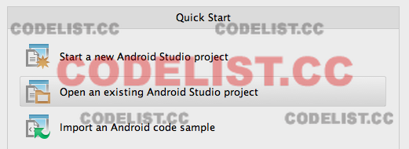
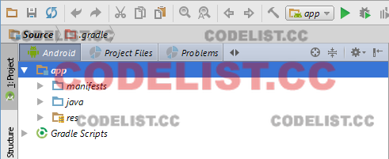
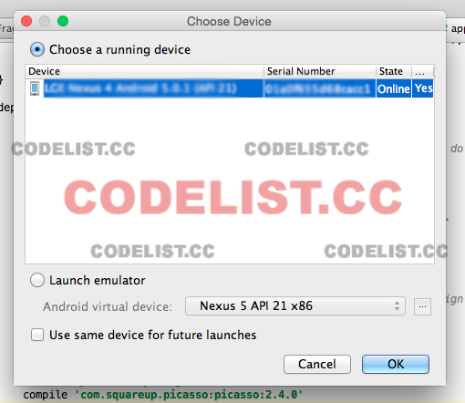
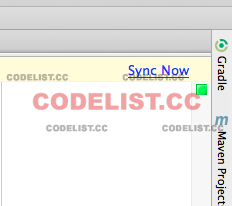
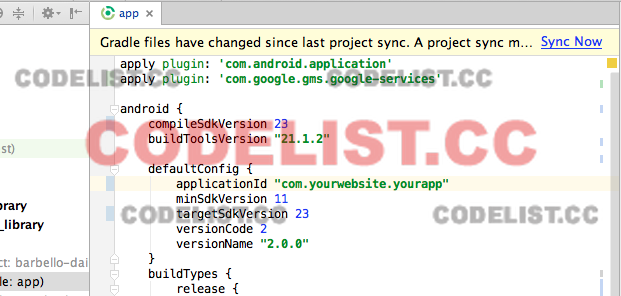
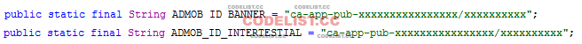
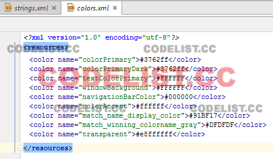
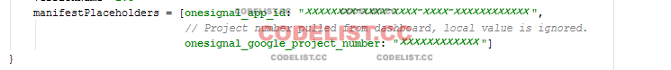
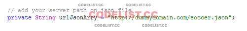
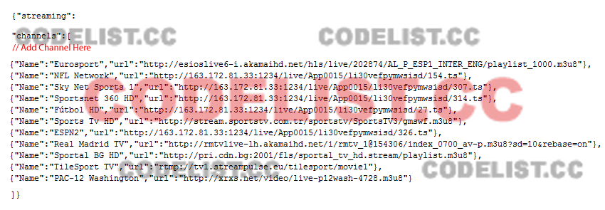

Created : 15/05/2017
By : Rn Media Dev
Email : rizwan_rehan@hotmail.com
Skype ID : rizwan.rehan1
Thank you for purchasing my App. If you have any questions that are beyond the scope of this help file, please feel free to email via my user page contact form here. Thanks so much!
Thank you for purchasing our item, Live Soccer Score. If you have
any questions that are beyond the scope of this user guide, please feel free to post the questions
via email :rizwan_rehan@hotmail.com .Thanks so much!
Do not forget to rate this item if you think it is great.
Now, you have already installed all softwares that required to configure Android project. To open
Android project in Android Studio follow the following steps:
1. Run Android Studio, you will see Welcome to Android Studio window.
2. Select Open an existing Android Studio project (Illustration 1) and go to the location of
where you store your Android project. After that click Choose button.

Illustration 1: Open Android project
3. A new window will open Android project and the project will appear on Project pane at the
left side of the window (Illustration 2). Insure that your project is display in Android
structure.

Illustration 2: Android project on Project window
4. You can now run your Android project by selecting Run > Run 'app' on menubar.
5. Choose Device window will appear (Illustration 3), you can select whether you want to run your app on Android device
that connected to your computer or Android emulator that you have already created before. Click OK button to run the project.
You can see this article for more information about how to run Android project on Android device

Illustration 3: Choose Device window
6. If your Android project contain error and or asked to sync your gradle file, open
build.gradle(Module: app) file in Gradle scripts directory of the project then click Sync
Now... button at the top right corner of Editor window to sync the project gradle
(Illustration 4).

Illustration 4: Sync gradle file
Renaming application package name is required before publishing your Android app. Make sure that your package name is unique as this will be checked when you publish your app on the market
Open build.gradle (Module:app) file in Gradle Scripts directory and change applicationId with your new package name,
for example “com.yourwebsite.yourapp” and click Sync Now link at the top right corner of the window (Illustration 5).

Illustration 5: Change applicationId in build.gradle file
Optionally enter your Admob Banner Ad Unit ID and Admob Interstitial Unit ID
Go to com/example/rnmediadev007/livesoccerapp/activity/MainActivity.java file and change Ad Unit ID (Illustration 6)

Go to com/example/rnmediadev007/livesoccerapp/activity/Live_matches_Details.java file and change Ad Unit ID (Illustration 6)
Go to com/example/rnmediadev007/livesoccerapp/activity/news_detail.java file and change Ad Unit ID (Illustration 6)
Go to com/example/rnmediadev007/livesoccerapp/activity/video.java file and change Ad Unit ID (Illustration 6)
Illustration 6: Change Ad Unit ID
Live-Soccer-Score has implemented design in its user interface so that customizing the color of the app become easier. Here is how to change the color of the app:
1. Open colors.xml in app/res/values directory.
2. Change the hex color of each color attributes (Illustration 7).

Illustration 7: Customize app color
To make this app meet your brand, besides customizing the color of the app, you also need to
change the image resources which used in this app such as app launcher icon.
Please, follow the steps below to customize the image resources:
1. To change app launcher icon of the app, create your own icon in PNG format and name it
as ic_launcher.png. Create it in 4 different sizes with the following specifications:
◦ 88 x 88 pixels in res/drawable directory.
◦ 445 x 432 pixels in res/drawable-hdpi director.
◦ 445 x 432 pixels in res/drawable-mdpi directory.
◦ 445 x 432 pixels in res/drawable-xhdpi directory.
◦ 445 x 432 pixels in res/drawable-xxhdpi directory.
◦ 445 x 432 pixels in res/drawable-xxxhdpi directory.
◦ 72 x 72 pixels in res/mipmap-hdpi directory.
◦ 48 x 48 pixels in res/mipmap-mdpi director.
◦ 96 x 96 pixels in res/mipmap-xhdpi directory.
◦ 192 x 192 pixels in res/mipmap-xxhdpi directory.
2. Put those files in each directories via window explorer.
If you would like to use OneSignal push notifications open build.gradle (in /app) and enter a value for 'onesignal_app_id' and 'onesignal_google_project_number (Illustration 8)

Illustration 8 : Change OneSignal App ID
Go to com/example/rnmediadev007/livesoccerapp/fragments/live_streaming.java file and change Server Path (Illustration 9)

Go to your server upload json file and add / remove channel (Illustration 9)

Illustration 9 : change Server Path and add / remove channel for json file
Once again, thank you so much for purchasing this application. As I said at the beginning, I'd be glad to help you if you have any questions relating to this application. No guarantees, but I'll do my best to assist. If you have a more general question relating to the application on codecanyon, you might consider visiting the forums and asking your question in the "Item Discussion" section.
RN Media Dev